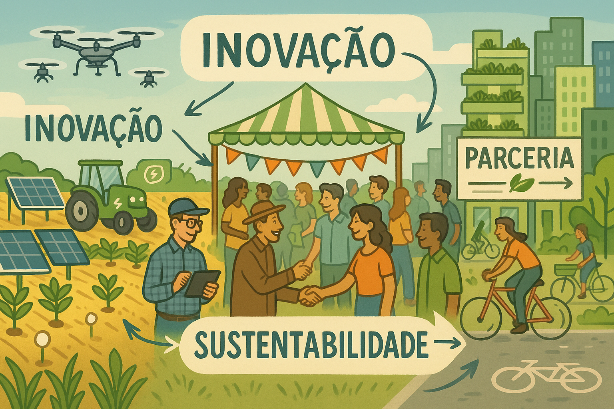

Entenda como o campo e a cidade se interligam e se influenciam mutuamente.
Saiba MaisA conexão campo-cidade refere-se à interdependência entre as zonas urbanas e rurais, onde ambos se beneficiam e influenciam. O campo oferece recursos essenciais, enquanto a cidade oferece infraestrutura e consumo.
Esta relação é crucial para o crescimento econômico e o equilíbrio social. Ela fortalece a economia e proporciona uma troca cultural que beneficia a sociedade como um todo.
Como podemos valorizar ainda mais essa conexão? Ao refletirmos sobre a relação entre o campo e a cidade, percebemos que ambos são interdependentes: o campo abastece a cidade com alimentos e recursos naturais, enquanto a cidade oferece tecnologias, serviços e mercados que impulsionam o desenvolvimento rural. Festejar essa conexão é reconhecer a importância de cada um e promover o respeito, a cooperação e o diálogo entre esses espaços. Somente assim poderemos construir um futuro mais equilibrado, sustentável e justo para todos